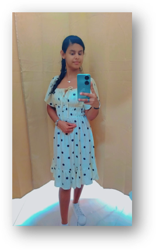
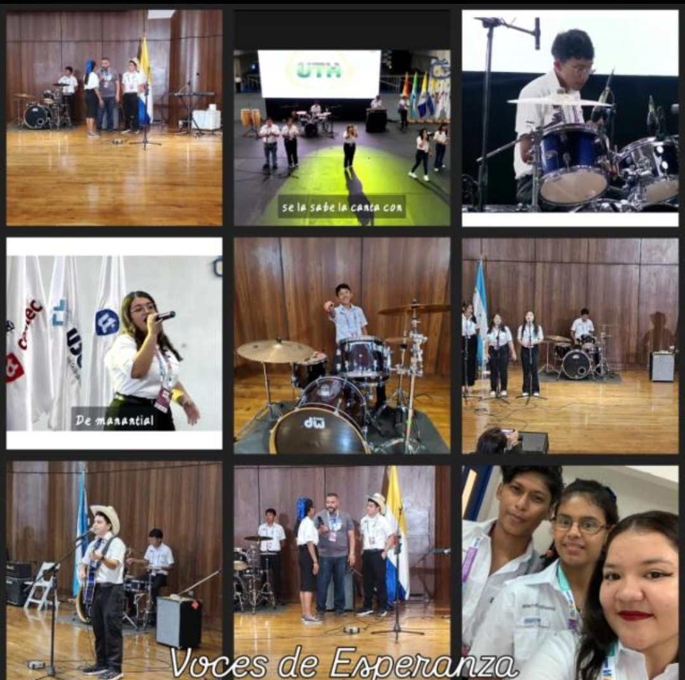
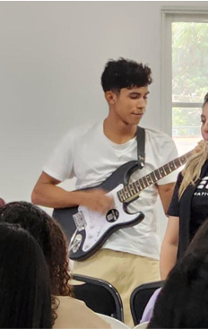
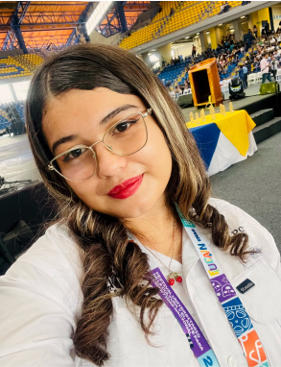
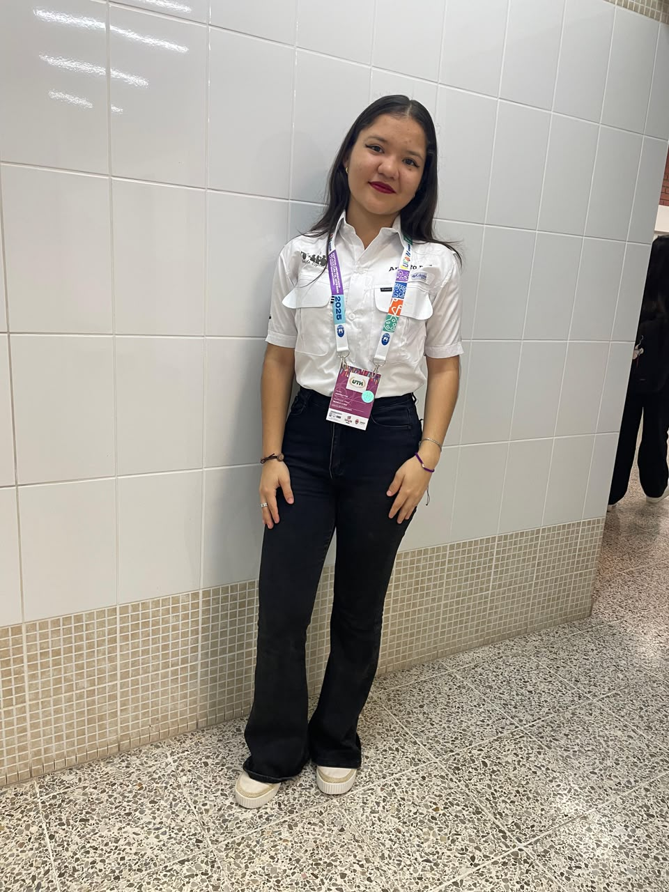
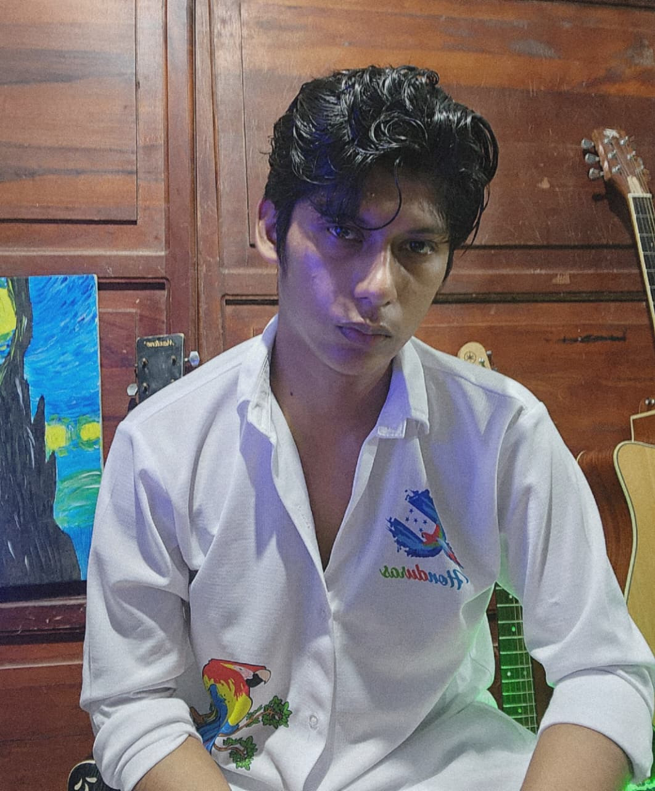
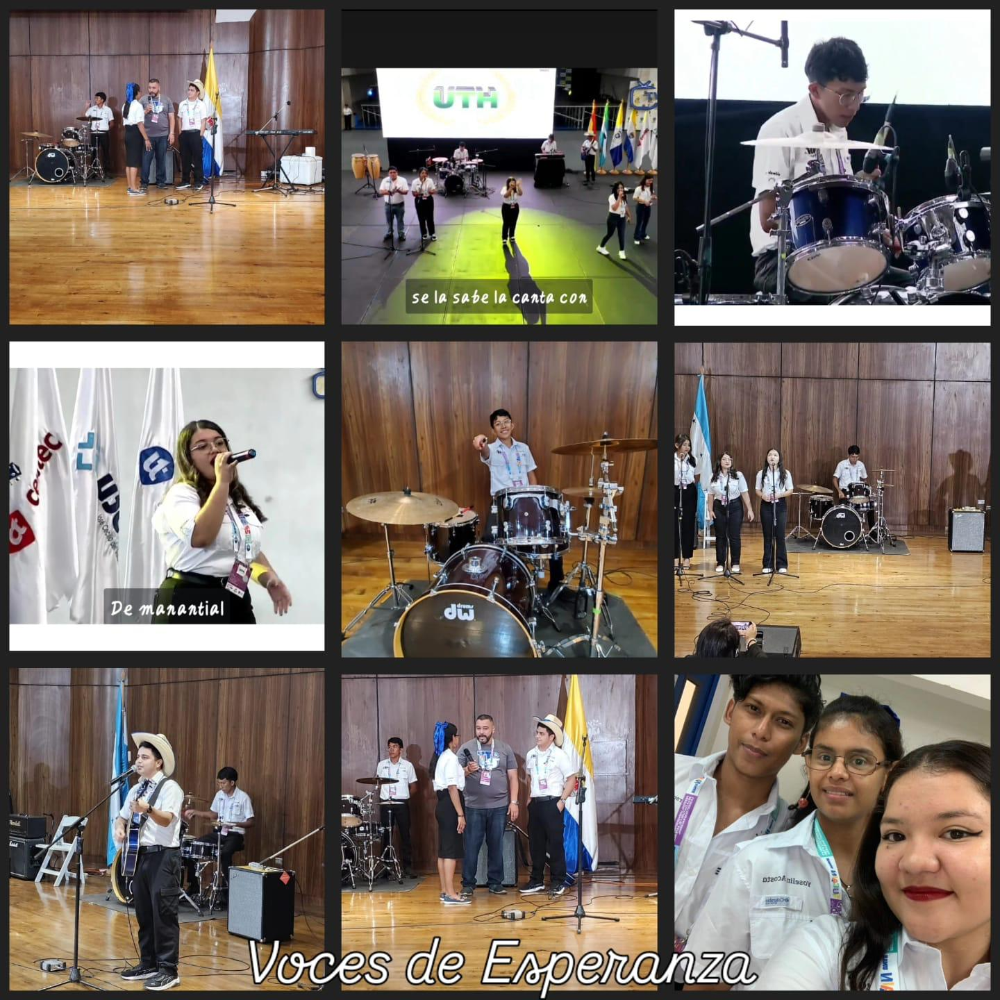

Yoselin Nohemy Acosta Morán
27 años · Tecladista
Ingeniería en computación
“El talento, se representan con orgullo.”

UTH Villanueva · Cuadro musical
Desde el 20 de junio de 2025 · Villanueva, Honduras
Voces de Esperanza nace el 20 de junio de 2025, por iniciativa de la MSc. Nancy Mencias, con el propósito de crear un espacio artístico donde estudiantes de la UTH Campus Villanueva pudieran descubrir, desarrollar y compartir su talento musical, utilizando la música y el canto como medios para transmitir mensajes de esperanza, identidad, unidad y orgullo por Honduras.
Desde sus inicios, el grupo se ha caracterizado por la participación activa de jóvenes con diferentes talentos musicales, conformando una propuesta artística que integra cinco vocalistas, batería, guitarra acústica, dos guitarras eléctricas y piano. Esta diversidad permite que cada integrante aporte sus conocimientos, habilidades y sensibilidad artística para construir una expresión musical armoniosa y significativa.
Cada voz y cada instrumento se unen para transmitir mensajes de esperanza, identidad, unidad y orgullo por Honduras.
Voces de Esperanza
Una sola expresión: esperanza e inspiración.
Promover el talento artístico de los estudiantes de la UTH Campus Villanueva a través de la música y el canto, creando un espacio de formación, convivencia y expresión donde las voces y los instrumentos se unan para transmitir mensajes de esperanza, identidad, unidad y valores. Buscamos fortalecer las capacidades artísticas de nuestros integrantes mediante la disciplina, el compromiso y el trabajo en equipo, llevando nuestra música a diferentes escenarios y comunidades.
Ser un cuadro musical universitario reconocido a nivel nacional e internacional por su calidad artística, disciplina, creatividad y compromiso, convirtiéndose en un referente de formación y proyección musical para los jóvenes, llevando a través de cada voz, instrumento y presentación un mensaje de esperanza e inspiración.
Creemos en el poder de la música para inspirar, motivar y transmitir mensajes positivos que puedan transformar vidas.
Desarrollamos nuestro talento con entusiasmo, entrega y amor por el canto y la interpretación musical.
Asumimos con responsabilidad los ensayos, presentaciones y compromisos, comprendiendo que el crecimiento artístico requiere constancia.
Cada integrante aporta su talento y esfuerzo para alcanzar los objetivos del grupo y representar dignamente a la UTH.
Reconocemos que cada voz y cada instrumento son importantes para construir una expresión musical armoniosa y significativa.
Valoramos a cada integrante, sus capacidades, ideas y aportes, promoviendo un ambiente de convivencia sana y crecimiento colectivo.
Valoramos nuestras raíces y nuestra cultura, utilizando la música como una herramienta para fortalecer el sentido de pertenencia.
Enfrentamos los retos musicales con determinación, aprendiendo de cada experiencia y buscando mejorar continuamente.
Trabajamos para perfeccionar nuestras habilidades vocales e instrumentales y ofrecer presentaciones de calidad.
Entendemos que nuestras diferencias de voces, talentos e instrumentos se complementan para crear una sola expresión: Voces de Esperanza.
Fundadora y directora · MSc. Nancy Mencias — Rectora UTH Villanueva · Vocalista

27 años · Tecladista
Ingeniería en computación
“El talento, se representan con orgullo.”
37 años · Coro
Licenciatura en Diseño Grafico

19 años · Guitarrista
Ingeniería en Mecatrónica Industrial
“Prefiero tocar una sola nota con sentimiento que cien sin él.”

20 años · Coro
Gerencia de Negocios
“Canta si te la sabes, al ritmo de tu corazón”

20 años · Cantante
Gerencia de Negocios
“Mi canto es mi mejor instrumento, porque más allá de las palabras expresan un sentimiento”
22 años · Coordinador de canto
Ing. Computación
“Poniendo mi escencia en cada nota que mis manos toquen🙌🏻🎸”
21 años · Músico Baterista
Licenciatura en Gerencia de Negocios
“Escuchen la melodía y disfruten del ritmo de mi batería⚡️”

Integrante
Toca cada etapa para ver la foto. Empieza en la fundación de junio 2025.

Toca una foto para ampliarla. Orden cronológico.
Clips de 20 segundos · ensayos y presentaciones.
Acompaña al coro en sus redes sociales.
Otro grupo artístico de nuestra universidad.